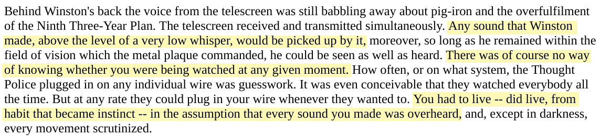

This panopticonical effect of not knowing whether or not the device is listening becomes more unnerving than knowing for sure that the device is always on and listening. Although the majority of today's tech users are happy to sacrifice privacy for convenience and trust that Apple, Microsoft, Amazon, and Google won't collect their data or record their conversations in an unethical or secretive way, a more ethical design decision would make users more aware of the persistent surveillance capacity of these ubiquitous smart assistants.